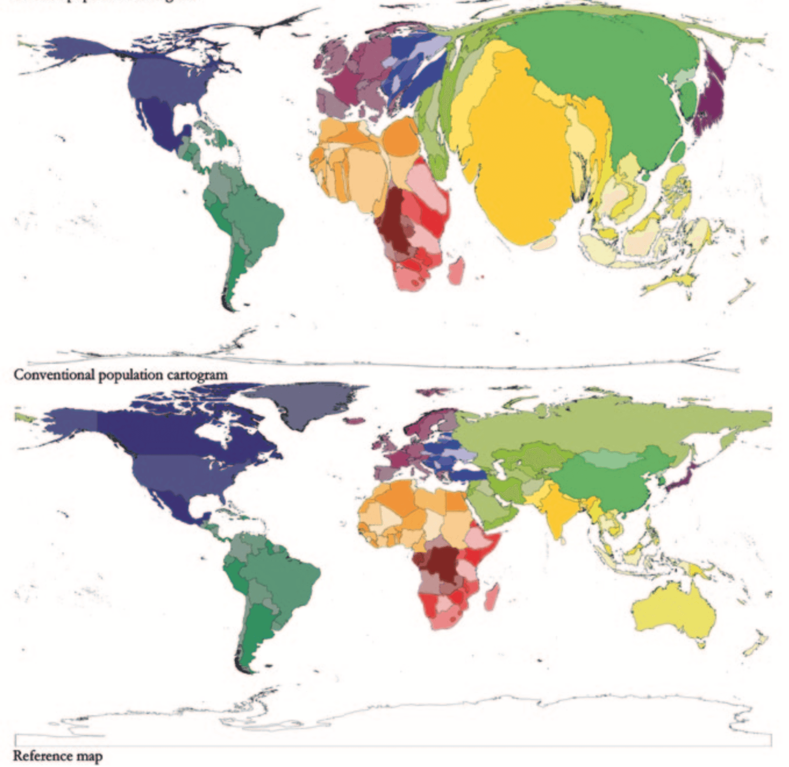

In the outstanding thesis of Benjaming D. Hennig, following picture is given: It shows how the world would look like if each country has geographic area proportional to its population. This is an example of contiguous cartogram and he discusses these more in his thesis, which is also published as a book, see Rediscovering the World.1
